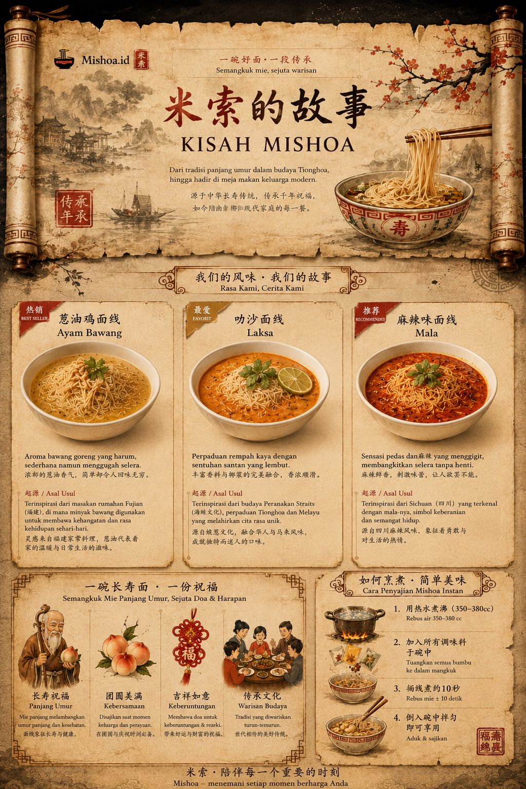
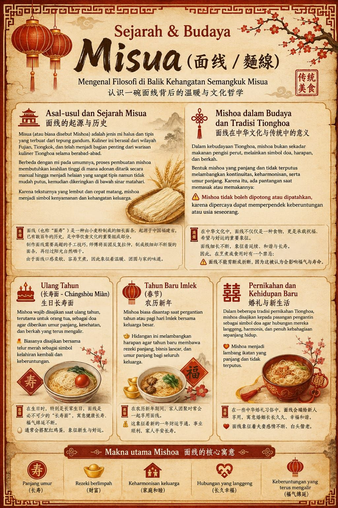
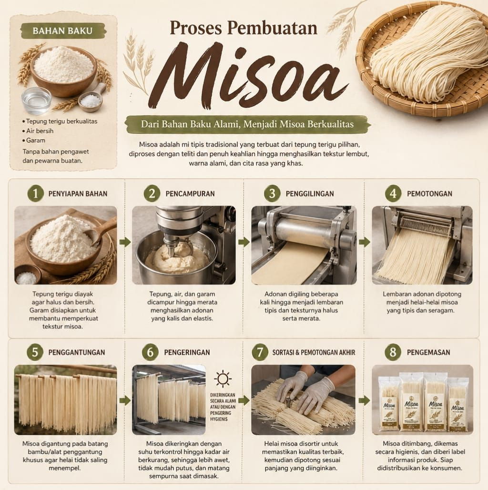

Setiap kali sumpit mengangkat seuntai mie tanpa memutusnya, ada satu harapan tua yang diam-diam terucap: umur panjang, dan hidup yang terus mengalir.

Sejarah & Filosofi
Mie sudah hadir di meja makan Tiongkok sejak lebih dari empat ribu tahun lalu, dan lambat laun berkembang jadi lebih dari sekadar makanan — jadi simbol doa dan harapan yang diwariskan turun-temurun. Berikut kisah lengkapnya.
面条在中国已有超过四千年历史，早已超越单纯食物的意义， 成为世代相传的祝福与希望的象征。以下是完整的故事。

Dari Dapur ke Meja Makan
Kualitas itu dimulai jauh sebelum mie sampai di tangan Bapak/Ibu. Ini proses di balik setiap helai Mishoa — dibuat dari bahan alami, tanpa pengawet dan pewarna buatan.
品质始于米索送到您手中之前的每一个环节。以下是每一根面线背后的制作过程—— 采用天然原料制成，不含防腐剂与人工色素。

Mishoa Hari Ini
Di Mishoa, warisan ini tidak kami simpan hanya untuk hari raya. Kami percaya doa panjang umur dan kebahagiaan itu layak hadir di meja makan sehari-hari — bukan cuma setahun sekali. Setiap mangkuk yang kami siapkan membawa semangat yang sama seperti yang dijaga leluhur: sederhana dibuat, namun penuh makna saat disantap bersama orang-orang terkasih.
在米索，我们不将这份传统只留给节庆时刻。我们相信， 对长寿与幸福的祈愿，值得出现在每一天的餐桌上，而不仅仅是一年一度。 我们准备的每一碗面，都延续着先人所守护的同一份精神： 制作简单，却在与所爱之人共享时，意义深远。

Jadi lain kali Bapak/Ibu menyantap semangkuk Mishoa — baik untuk merayakan sesuatu, atau sekadar makan siang biasa — semoga setiap suapan membawa sedikit dari makna itu: panjang umur, sehat selalu, dan hidup yang terus mengalir dengan baik.
所以下次您享用一碗米索时——无论是为了庆祝，还是只是平常的一餐—— 愿每一口都带着那份寓意：长命百岁，身体健康，生活顺遂绵长。